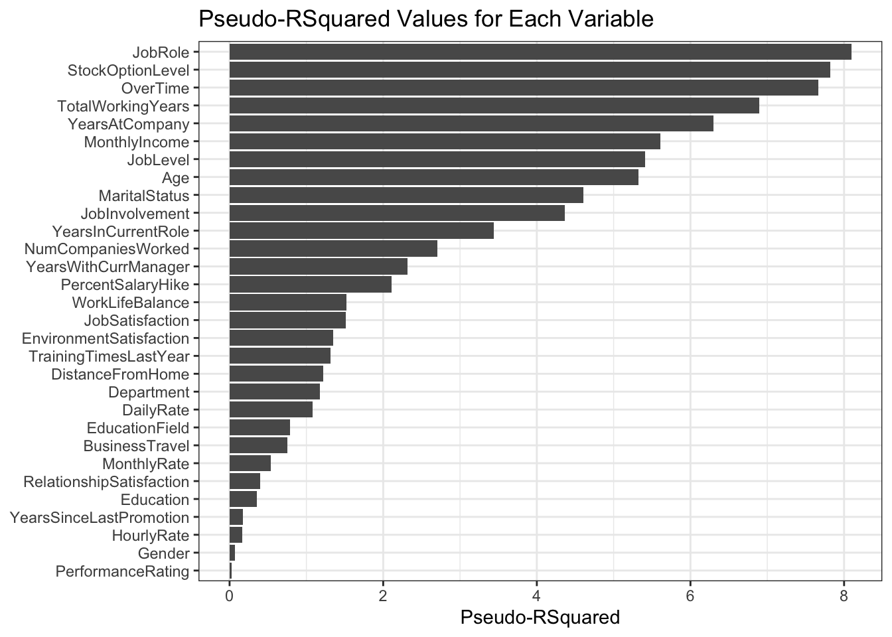
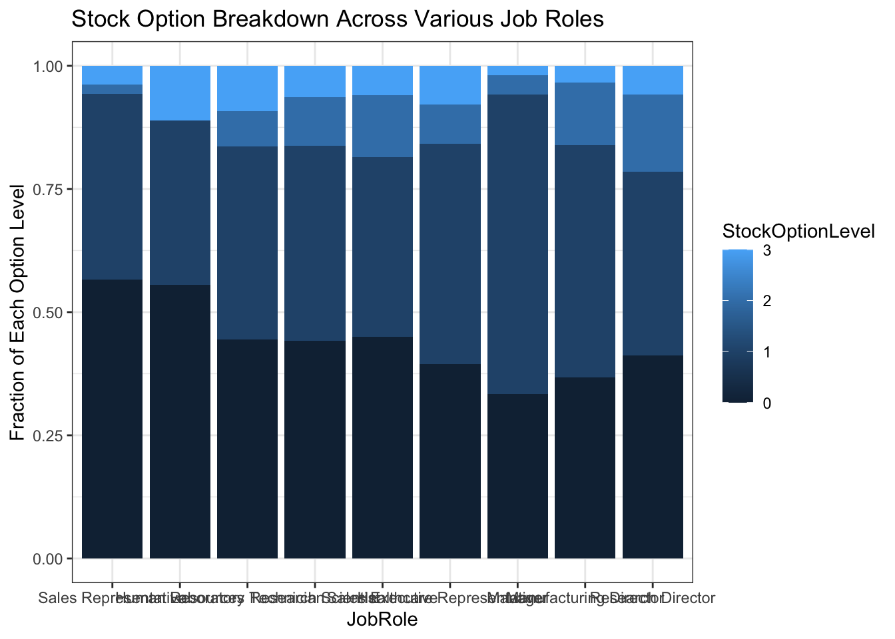
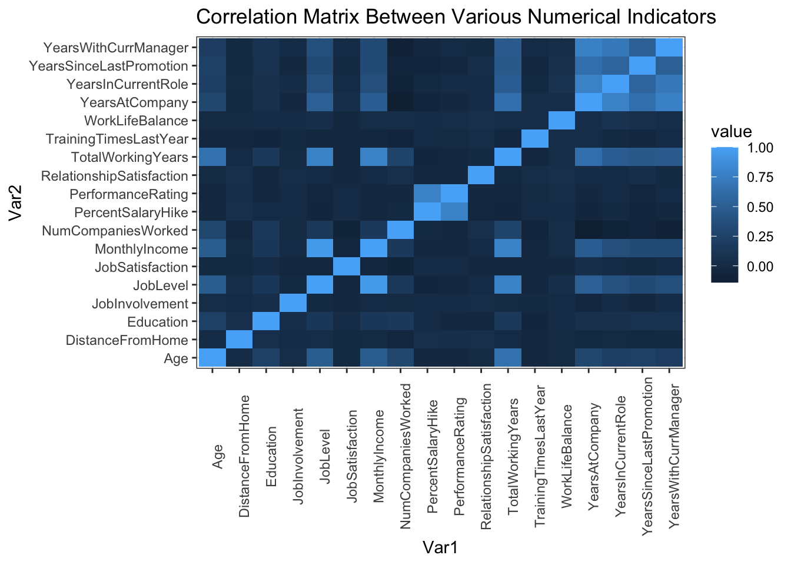
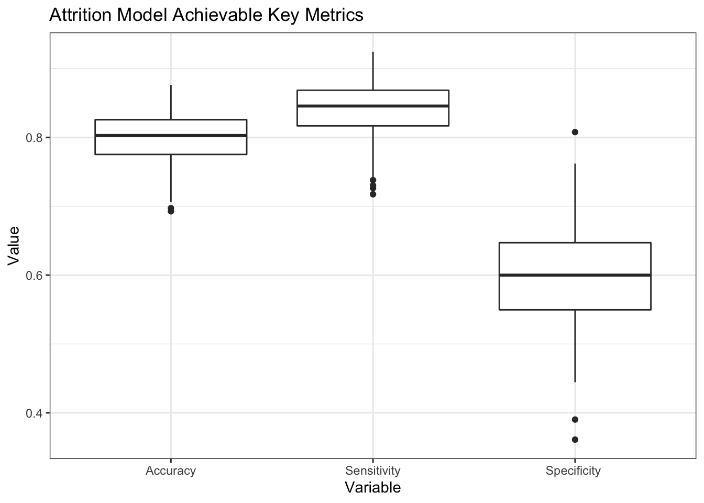
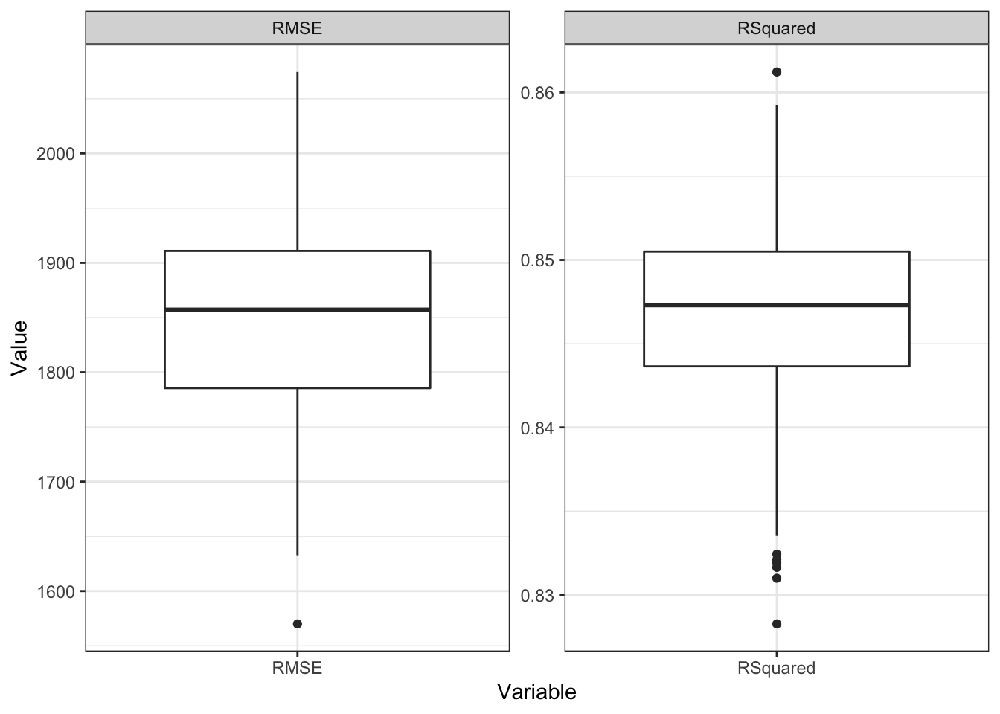

library(tidyverse)
library(class)
library(caret)
library(e1071)
theme_set(theme_bw())Reducing Employee Attrition
An Analysis of Key Factors Leading to Employee Turnover
Introduction
The specific goals of this analysis are to:
Identify the top three factors that contribute to attrition
Learn about any job role specific trends that may exist in the data set (e.g., “Data Scientists have the highest job satisfaction”).
Provide any other interesting trends and observations from your analysis.
Build a model to predict attrition
Executive Summary
To be filled in
Libraries and Data Loading
employeeData = read_csv("https://raw.githubusercontent.com/ayule89/SMU_DDS_CaseStudy2/main/Data/CaseStudy2-data.csv")Identifying the top three factors that contribute to attrition
To start, how many of the 870 employees in the data actually left?
There is around 140 out of 870 employees or 16% that left.
employeeData |> count(Attrition)# A tibble: 2 × 2
Attrition n
<chr> <int>
1 No 730
2 Yes 140Screening all variables to visually investigate which parameters are the highest indicators of attrition
There are a number of variables that could attribute to employee attrition. We will start by first screening each of the variables to look for the top 3 factors. The full list of variables includes:
- Age
- Business Travel
- Daily Rate
- Department
- Distance From Home
- Education
- Education Field
- Environment Satisfaction
- Gender
- Hourly Rate
- Job Involvement
- Job Level
- Job Role
- Job Satisfaction
- Marital Status
- Monthly Income
- Monthly Rate
- Number of Previous Companies Worked For
- Over Time
- Percent Salary Hike
- Performance Rating
- Relationship Satisfaction
- Stock Options
- Total Working Years
- Training Times Last Year
- Work Life Balance
- Years At Company
- Years In Current Role
- Years Since Last Promotion
- Years With Current Manager
Attrition based on age
Attrition looks to be slightly higher in people around 20 years of age.
employeeData |>
mutate(Age = round(Age/5)*5) |>
group_by(Age) |>
count(Attrition) |>
ggplot(aes(x = Age, y = n, fill = Attrition)) +
geom_col(position = "fill")
Attrition based on business travel
There is a slightly higher attrition rate for those traveling frequently, decreasing as travel decreases
employeeData |>
group_by(BusinessTravel) |>
count(Attrition) |>
ggplot(aes(x = BusinessTravel, y = n, fill = Attrition)) +
geom_col(position = "fill")
Attrition based on daily rate?
Attrition looks to be slightly higher around the 400 dollar group, but consistent everywhere else
employeeData |>
ggplot(aes(x = DailyRate)) +
geom_histogram()`stat_bin()` using `bins = 30`. Pick better value with `binwidth`.
employeeData |>
mutate(DailyRate = round(DailyRate/400)*400) |>
group_by(DailyRate) |>
count(Attrition) |>
ggplot(aes(x = DailyRate, y = n, fill = Attrition)) +
geom_col(position = "fill")
Attrition based on department?
Nothing significant as far various departments having higher / lower attrition
employeeData |>
group_by(Department) |>
count(Attrition) |>
ggplot(aes(x = Department, y = n, fill = Attrition)) +
geom_col(position = "fill")
Attrition based on commute?
Attrition looks to be significantly higher for people around 15 miles of distance traveled or higher
employeeData |>
ggplot(aes(x = DistanceFromHome)) +
geom_histogram()`stat_bin()` using `bins = 30`. Pick better value with `binwidth`.
employeeData |>
mutate(DistanceFromHome = round(DistanceFromHome/5)*5) |>
group_by(DistanceFromHome) |>
count(Attrition) |>
ggplot(aes(x = DistanceFromHome, y = n, fill = Attrition)) +
geom_col(position = "fill")
Attrition based on education
Attrition decreases with education level consistently
employeeData |>
group_by(Education) |>
count(Attrition) |>
ggplot(aes(x = Education, y = n, fill = Attrition)) +
geom_col(position = "fill")
Attrition based on education field
Attrition is slightly higher in HR followed by Technical Degree, then marketing
employeeData |>
group_by(EducationField) |>
count(Attrition) |>
ggplot(aes(x = EducationField, y = n, fill = Attrition)) +
geom_col(position = "fill")
Attrition based on environment satisfaction
Low environment satisfaction has slightly higher attrition, otherwise 2-4 are ~equal
employeeData |>
group_by(EnvironmentSatisfaction) |>
count(Attrition) |>
ggplot(aes(x = EnvironmentSatisfaction, y = n, fill = Attrition)) +
geom_col(position = "fill")
Attrition based on gender
The breakdown in preference between males and females looks to be insignificant
employeeData |>
group_by(Gender) |>
count(Attrition) |>
ggplot(aes(x = Gender, y = n, fill = Attrition)) +
geom_col(position = "fill")
Attrition based on hourly rate
No significant trends in hourly rate and attrition
employeeData |>
ggplot(aes(x = HourlyRate)) +
geom_histogram()`stat_bin()` using `bins = 30`. Pick better value with `binwidth`.
employeeData |>
mutate(HourlyRate = round(DailyRate/200)*200) |>
group_by(HourlyRate) |>
count(Attrition) |>
ggplot(aes(x = HourlyRate, y = n, fill = Attrition)) +
geom_col(position = "fill")
Attrition based on job involvement
High correlation with job involvement and attrition
employeeData |>
group_by(JobInvolvement) |>
count(Attrition) |>
ggplot(aes(x = JobInvolvement, y = n, fill = Attrition)) +
geom_col(position = "fill")
Attrition based on job level
1 job level has higher attrition, but other than that no obvious trends
employeeData |>
group_by(JobLevel) |>
count(Attrition) |>
ggplot(aes(x = JobLevel, y = n, fill = Attrition)) +
geom_col(position = "fill")
Attrition based on job role
Significantly higher attrition in sales representative
employeeData |>
group_by(JobRole) |>
count(Attrition) |>
ggplot(aes(x = JobRole, y = n, fill = Attrition)) +
geom_col(position = "fill")
Attrition based on job satisfaction
1 job level has higher attrition decreasing as job satisfaction increases
employeeData |>
group_by(JobSatisfaction) |>
count(Attrition) |>
ggplot(aes(x = JobSatisfaction, y = n, fill = Attrition)) +
geom_col(position = "fill")
Attrition based on marital status
Higher attrition for single and decreasing for married and further for divorced
employeeData |>
group_by(MaritalStatus) |>
count(Attrition) |>
ggplot(aes(x = MaritalStatus, y = n, fill = Attrition)) +
geom_col(position = "fill")
Attrition based on monthly income
Highest attrition in less than 5000 monthly income
employeeData |>
ggplot(aes(x = MonthlyIncome)) +
geom_histogram()`stat_bin()` using `bins = 30`. Pick better value with `binwidth`.
employeeData |>
mutate(MonthlyIncome = round(MonthlyIncome/5000)*5000) |>
group_by(MonthlyIncome) |>
count(Attrition) |>
ggplot(aes(x = MonthlyIncome, y = n, fill = Attrition)) +
geom_col(position = "fill")
Attrition based on monthly rate
Slightly highest around 10000 decreasing lower and higher
employeeData |>
ggplot(aes(x = MonthlyRate)) +
geom_histogram()`stat_bin()` using `bins = 30`. Pick better value with `binwidth`.
employeeData |>
mutate(MonthlyRate = round(MonthlyRate/5000)*5000) |>
group_by(MonthlyRate) |>
count(Attrition) |>
ggplot(aes(x = MonthlyRate, y = n, fill = Attrition)) +
geom_col(position = "fill")
Attrition based on number of previous companies
Highest for people who have worked at 5 or more companies, meaning people might have a tendency to change jobs a lot. There’s also a slight uptick at low which may indicate individuals that are prone to leave frequently.
employeeData |>
group_by(NumCompaniesWorked) |>
count(Attrition) |>
ggplot(aes(x = NumCompaniesWorked, y = n, fill = Attrition)) +
geom_col(position = "fill")
Attrition based on working over time
Highest attrition in people working overtime
employeeData |>
group_by(OverTime) |>
count(Attrition) |>
ggplot(aes(x = OverTime, y = n, fill = Attrition)) +
geom_col(position = "fill")
Attrition based on percent salary hike
No real obvious trends. Slightly higher around the 22-24% salary increase range
employeeData |>
group_by(PercentSalaryHike) |>
count(Attrition) |>
ggplot(aes(x = PercentSalaryHike, y = n, fill = Attrition)) +
geom_col(position = "fill")
Attrition based on performance rating
Nothing significant in performance rating
employeeData |>
group_by(PerformanceRating) |>
count(Attrition) |>
ggplot(aes(x = PerformanceRating, y = n, fill = Attrition)) +
geom_col(position = "fill")
Attrition based on relationship satisfaction
Slightly higher in lower relationship satisfaction
employeeData |>
group_by(RelationshipSatisfaction) |>
count(Attrition) |>
ggplot(aes(x = RelationshipSatisfaction, y = n, fill = Attrition)) +
geom_col(position = "fill")
Attrition based on stock option level
Highest among 0 and 3 (lower at 1 and 2)
employeeData |>
group_by(StockOptionLevel) |>
count(Attrition) |>
ggplot(aes(x = StockOptionLevel, y = n, fill = Attrition)) +
geom_col(position = "fill")
Attrition based on total working years
Attrition is highest in people during their first 5 years and then levels off. At 40 years people begin retiring.
employeeData |>
ggplot(aes(x = TotalWorkingYears)) +
geom_histogram()`stat_bin()` using `bins = 30`. Pick better value with `binwidth`.
employeeData |>
mutate(TotalWorkingYears = round(TotalWorkingYears/5)*5) |>
group_by(TotalWorkingYears) |>
count(Attrition) |>
ggplot(aes(x = TotalWorkingYears, y = n, fill = Attrition)) +
geom_col(position = "fill")
Attrition based on training times
No noticeable patterns
employeeData |>
group_by(TrainingTimesLastYear) |>
count(Attrition) |>
ggplot(aes(x = TrainingTimesLastYear, y = n, fill = Attrition)) +
geom_col(position = "fill")
Attrition based on work life balance
Significant trend in attrition with lower work life balance and decreasing as work life balance improves
employeeData |>
group_by(WorkLifeBalance) |>
count(Attrition) |>
ggplot(aes(x = WorkLifeBalance, y = n, fill = Attrition)) +
geom_col(position = "fill")
Attrition based on years at company
Slightly higher for people in their first 5 years. People over 40 are retiring.
employeeData |>
ggplot(aes(x = YearsAtCompany)) +
geom_histogram()`stat_bin()` using `bins = 30`. Pick better value with `binwidth`.
employeeData |>
mutate(YearsAtCompany = round(YearsAtCompany/5)*5) |>
group_by(YearsAtCompany) |>
count(Attrition) |>
ggplot(aes(x = YearsAtCompany, y = n, fill = Attrition)) +
geom_col(position = "fill")
Attrition based on years at company
Slightly higher for people in their first 5 years. People worked over 20 years in the current role show no attrition.
employeeData |>
ggplot(aes(x = YearsInCurrentRole)) +
geom_histogram()`stat_bin()` using `bins = 30`. Pick better value with `binwidth`.
employeeData |>
mutate(YearsInCurrentRole = round(YearsInCurrentRole/5)*5) |>
group_by(YearsInCurrentRole) |>
count(Attrition) |>
ggplot(aes(x = YearsInCurrentRole, y = n, fill = Attrition)) +
geom_col(position = "fill")
Attrition based on years since last promotion
Slightly higher attrition for people over 15 years since their last promotion but otherwise no trends
employeeData |>
ggplot(aes(x = YearsSinceLastPromotion)) +
geom_histogram()`stat_bin()` using `bins = 30`. Pick better value with `binwidth`.
employeeData |>
mutate(YearsSinceLastPromotion = round(YearsSinceLastPromotion/5)*5) |>
group_by(YearsSinceLastPromotion) |>
count(Attrition) |>
ggplot(aes(x = YearsSinceLastPromotion, y = n, fill = Attrition)) +
geom_col(position = "fill")
Attrition based on years with current manager
Longer time spent with current manager the less likely there is for attrition
employeeData |>
ggplot(aes(x = YearsWithCurrManager)) +
geom_histogram()`stat_bin()` using `bins = 30`. Pick better value with `binwidth`.
employeeData |>
mutate(YearsWithCurrManager = round(YearsWithCurrManager/5)*5) |>
group_by(YearsWithCurrManager) |>
count(Attrition) |>
ggplot(aes(x = YearsWithCurrManager, y = n, fill = Attrition)) +
geom_col(position = "fill")